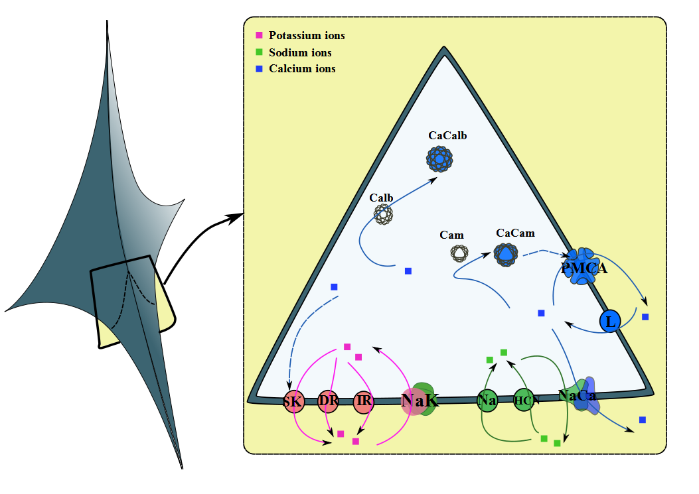

ABSTRACT: Spontaneous oscillations in the mid-brain dopaminergic neurons are an important feature of motor control. The degeneration of these neurons is involved in movement disorders, particularly Parkinson's Disease. Modelling of this activity is an important part of developing an understanding of the pathogenic process. We develop a mathematical paradigm to describe this activity with a single compartment approach. The model explicitly describes the dynamics of the transmembrane potential with changes in the levels of important cations and is verified for two major observations in literature regarding its behaviour in the presence of channel blockers. Stability of the model is judged based on the properties of its Monodromy matrix.
|  |